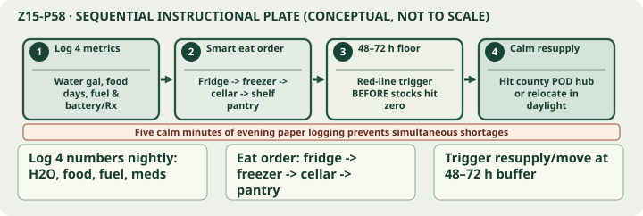

Z15-P58 · Disaster scenarios · New manuscript
Run daily household water, food, fuel, and battery pacing logs over 30 days
Detect shrinking reserves days ahead of exhaustion so households resupply or relocate calmly without sudden crises.
When it applies · Multi-week outages, supply-chain disruptions, or winter isolation events.
Equipment · Paper notebook, pencil, and four-column daily reserve log (Drinking Water, Food Days, Fuel/Heat, Battery/Med Power).

Actions
- Spend five calm minutes every evening writing down FOUR concrete numbers on paper: potable drinking-water gallons left, days of familiar pantry food left, heating/generator/vehicle fuel left, and battery/medical-power charge state (plus prescription days remaining).[D18, W14, T10]
- Eat household food in smart spoilage order across weeks: 1) Safe-temp refrigerated perishables first, 2) Safe frozen items if power fails, 3) Root-cellar/fresh produce showing early age, and 4) Rotated shelf-stable canned and dry pantry staples last.[D18, F04, P15]
- Set a hard RED-LINE RESUPPLY TRIGGER at 48 to 72 hours of remaining critical supply (water, prescriptions, infant formula, or heating fuel)—never wait until the last bottle or last pill before seeking county hubs or relocating.[D18, T10, U17]
Failure recognition · Discovering on Day 12 of a regional disruption that insulin, drinking water, and vehicle gas all hit zero on the exact same snowy evening.[D18, T10]
Verify · Confirm nightly 5-minute paper log tracks water, food, fuel, batteries, and prescriptions against a 48–72-hour action floor.[D18]
Stop or change course · Reaching a 48–72-hour critical reserve floor with no confirmed resupply triggers immediate relocation or county emergency-management assistance.[D18, U17]
Evidence and editorial notes
- D18 · FEMA / Ready.gov · Drought (current web edition)
- Section: Extended 30-Day Resilience, Supply Pacing, and Mutual Aid · Conditions: Multi-week regional disruption, supply-chain interruption, or prolonged utility recovery
Support: Manage 30-day household resilience through structured inventory tracking, conservative water/fuel/battery rationing, scheduled sanitation and hygiene routines, daily neighborhood wellness checks, and early transition to community distribution hubs before critical reserves run dry.
Limitations: Self-reliance plans must remain integrated with municipal/county relief and medical care—isolation without community check-ins increases mortality during prolonged disasters. · Conflicting evidence: None; frames 30-day scenarios realistically without doom-isolationism.
Editorial note: Anchors Z15 30-day operations, rationing logs, and community mutual-aid cards. · Specialist reviewer: Emergency management and community resilience
Primary source · checked 2026-11-24 - F04 · USDA / FDA / CDC · Food Safety During Power Outage (current web edition)
- Section: Refrigerated food and power outages · Conditions: Refrigerator starts cold; keep door closed
Support: An unopened refrigerator keeps food cold for about four hours. Follow the per-item discard chart after loss of temperature control. Never taste to test.
Limitations: Door openings accelerate warming; appliance thermometer is needed to verify temperature. · Conflicting evidence: None; retained for Z15 reconstruction.
Editorial note: Maintains five-pack integrity. · Specialist reviewer: Food safety and household preparedness
Primary source · checked 2026-11-24 - P15 · FEMA / Ready.gov · Emergency Food Supply (current web edition)
- Section: Emergency Food Inventory > Non-Perishable Rotation, Dietary Needs, and Tools · Conditions: Household multi-day to 30-day emergency pantry planning
Support: Build a rotated pantry of familiar shelf-stable foods requiring minimal water and no refrigeration (canned proteins/vegetables, dry grains/legumes, nut butters, infant/medical/pet diets), keep a manual can opener, and mark purchase/rotation dates clearly (FIFO).
Limitations: Do not invent unverified multi-decade shelf lives; commercial "Best By" dates reflect quality while damaged, rusted, or dented-seam cans pose safety hazards. · Conflicting evidence: None; aligns with FSG-4 and NCHFP storage hygiene.
Editorial note: Grounds household food inventory, FIFO rotation, and can-integrity screening. · Specialist reviewer: Household preparedness and food safety
Primary source · checked 2026-11-24 - T10 · FEMA / Ready.gov · People with Disabilities (current web edition)
- Section: People with Disabilities > Make a Plan and Build a Kit · Conditions: Individuals with mobility, sensory, medical, or power-dependent access and functional needs
Support: Build a personal support network, plan accessible evacuation transport, register voluntarily with local emergency registries where available, and plan backup power and spare supplies for medical devices, medications, and service animals.
Limitations: Local registry availability and utility priority-restoration policies vary by jurisdiction. · Conflicting evidence: None; extends generic preparedness plans to accessible requirements.
Editorial note: Directly addresses Z01 accessible emergency planning requirement. · Specialist reviewer: Accessible emergency management and disability preparedness
Primary source · checked 2026-11-24 - U17 · FEMA / Ready.gov · Evacuation (current web edition)
- Section: Household Evacuation Thresholds When Utilities Fail · Conditions: Uninhabitable indoor temperatures, sewage backup, persistent CO alarm, or structural/utility hazard
Support: Establish clear pre-agreed exit triggers to relocate to a warming center, hotel, or relatives BEFORE indoor freezing, carbon monoxide alarms, medical-device battery exhaustion, or impassable blizzard roads trap occupants.
Limitations: Waiting until indoor pipes burst or batteries hit zero removes safe travel options. · Conflicting evidence: None; aligns with T13 and E14.
Editorial note: Defines objective household abandonment thresholds in Z13. · Specialist reviewer: Emergency management and cold-weather operations
Primary source · checked 2026-11-24 - W14 · CDC · How to Create an Emergency Water Supply (current web edition)
- Section: How Much Water to Store; Rotation · Conditions: Household emergency water reserve planning
Support: Plan at least 1 gallon per person per day for at least 3 days (more for heat, illness, pregnancy, or pets); rotate self-filled water every 6 months.
Limitations: Backcountry active travel demands vary sharply by exertion, temperature, and humidity. · Conflicting evidence: None; household baseline is cited only as a planning floor, not a physiological maximum.
Editorial note: Distinguishes household storage floors from active field hydration demands. · Specialist reviewer: Household preparedness and drinking-water safety
Primary source · checked 2026-11-24
Source lineage · FEMA Ready.gov and CDC Emergency Water; new manuscript · Classification · New manuscript.